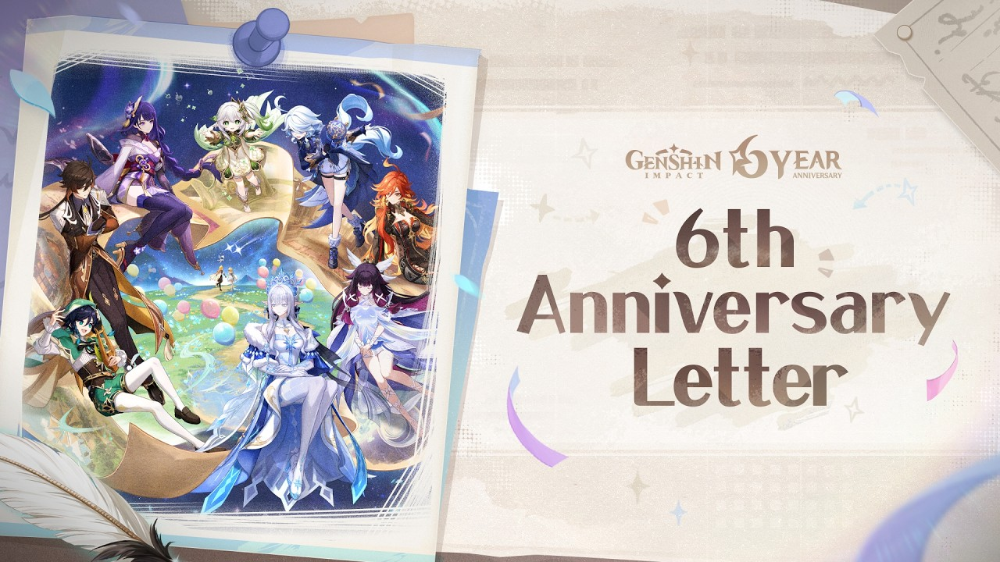

Panduan Genshin Impact
Panduan lengkap Genshin Impact: sistem pity, rotasi tim, manajemen resin harian, dan kesalahan yang paling sering terjadi pada pemain baru.

📄 Ringkasan Cepat
📜 Informasi Dasar
| Developer | HoYoverse (miHoYo) |
|---|---|
| Genre | Action RPG, Open World |
| Rilis | 28 September 2020 |
| Platform | PC, PS4, PS5, iOS, Android, Xbox Series X|S |
| Model | Free-to-play dengan microtransaction |
| Website resmi | https://genshin.hoyoverse.com/id/home |
⚙ Syarat Sistem
Genshin Impact bisa dimainkan di HP kelas menengah, termasuk salah satu game open world yang paling ramah untuk perangkat budget.
Butuh sekitar 20 GB ruang penyimpanan untuk versi mobile. Game ini selalu butuh koneksi internet aktif karena terhubung langsung ke server.
- Android 8.0 atau lebih baru, atau iOS 12 ke atas untuk versi mobile.
- PC: Windows 10 atau 11 64-bit, DirectX 11, minimal 8 GB RAM.
- Siapkan penyimpanan kosong sebelum instalasi. Update besar kadang memakan 10 GB lebih.
🎲 Sistem Gacha dan Pity
Pity adalah penghitung yang menjamin karakter 5-star setelah batas tertentu. Ada tiga konsep penting: base rate, soft pity, dan hard pity.
Di banner karakter, peluang 5-star adalah 0,6 persen per pull dan tetap datar sampai pull ke-73. Mulai sekitar pull ke-74 peluangnya naik tajam, dan di pull ke-90 kamu dijamin mendapat 5-star.
Setiap 5-star punya peluang 50 persen menjadi karakter yang sedang dibannerkan. Kalau kalah, 5-star berikutnya dijamin karakter tersebut. Worst case di banner karakter adalah 180 pull.
- Hard pity karakter 90 pull, hard pity weapon 80 pull.
- Soft pity karakter mulai sekitar pull 74, soft pity weapon mulai sekitar pull 63.
- Mendapat 5-star selalu me-reset pity ke 0. Riwayat pull bulan lalu tidak terbawa.
- Simpan Primogem untuk banner karakter. Jangan habiskan di banner weapon kalau targetmu karakter.
⚔ Tips Battle dan Rotasi Tim
Combat Genshin berbasis reaksi elemen. Damage tidak hanya soal angka Attack, tapi kombinasi elemen yang saling memicu reaksi.
Jangan hanya mengandalkan satu karakter. Rotasi tim beranggotakan empat orang penting karena banyak buff hanya aktif dalam durasi singkat dan harus di-refresh.
- Bawa satu karakter heal di setiap tim. Saat di ekspedisi, HP 0 tidak bisa di-revive.
- Manfaatkan reaksi: Cryo plus Pyro menghasilkan Melt dengan multiplier besar, Electro plus Hydro menghasilkan Electro-Charged.
- Gunakan Swirl Anemo untuk menyebarkan efek elemen ke tim yang sudah punya status elemen lain.
- Karakter dengan Burst besar sering punya damage ceiling tinggi, tapi butuh setup rotasi yang benar.
🌱 Mana dan Sumber Daya
Ada dua sumber daya yang sering tertukar: Mora untuk upgrade dan Primogem untuk wish.
Mora habis dalam hitungan jam kalau sering upgrade artefak. Treasure chest dan dungeon tetap jadi sumber paling konsisten untuk pemain yang gratis.
- Batasi upgrade artefak hanya ke level +4, +8, +12, dan +16. Di atas itu enhancer tidak sepadan lagi.
- Mora dari chest jauh lebih murah untuk farming daily commission di Teaching House.
- Jadwalkan Serenitea Pot supaya dapat Mora otomatis setiap hari.
- Primogem: ekspedisi 20 menit memberi 60 Primogem dan memakai 20 resin.
📅 Kebiasaan Harian yang Efektif
Ada batas resin 160 per hari. Semua konten yang memakai resin punya durasi yang sama per poin, jadi waktu mainmu terbatas.
Artinya kamu tidak bisa menyelesaikan semua daily setiap hari. Pilih konten yang paling berbasis waktu dan paling layak.
- Daily Commission memberi 90 Primogem. Selesaikan setiap hari karena gratis.
- Ekspedisi 20 menit layak karena menghasilkan Primogem dari waktu yang relatif singkat.
- Crystallize paling murah untuk EXP karakter karena tidak memakai resin sama sekali.
- Simpan sisa resin untuk event berbatas waktu, jangan habiskan untuk hal yang tidak penting.
❌ Kesalahan yang Sering Terjadi
Banyak pemain baru kehilangan progres karena kesalahan sederhana yang dampaknya besar.
Kabar baiknya, hampir semua kesalahan ini bisa diperbaiki tanpa harus mengulang dari awal.
- Meng Spend semua resin lalu kehabisan event. Jangan pull di banner yang tidak kamu incar.
- Upgrade artefak terlalu tinggi. Level +16 sudah jadi titik jenuh yang paling masuk akal.
- Menggunakan Stargaze untuk banner DPS padahal tim dasarnya belum lengkap.
- Tidak Pull karakter 4-star untuk melengkapi tim kedua.
- Main daily tanpa target. Tetapkan satu tujuan sebelum membuka game.
Catatan: angka pity, jadwal, dan mekanisme di halaman ini bisa berubah setelah patch. Cek pengumuman resmi bila perlu informasi paling mutakhir.